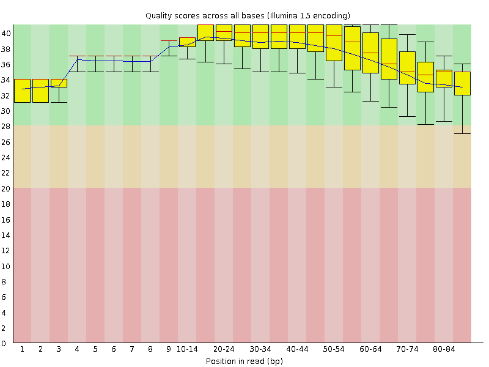
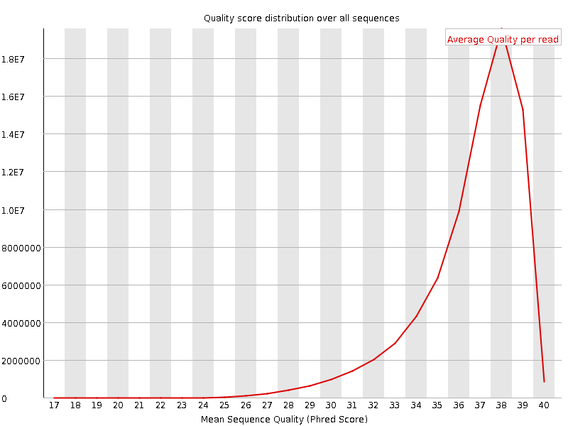
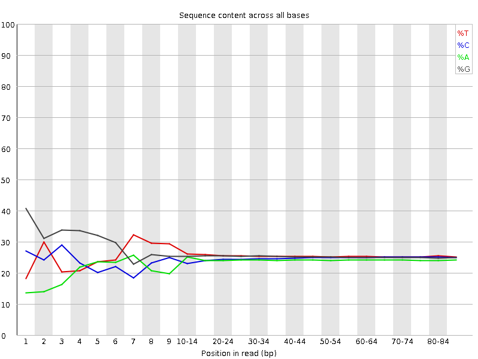
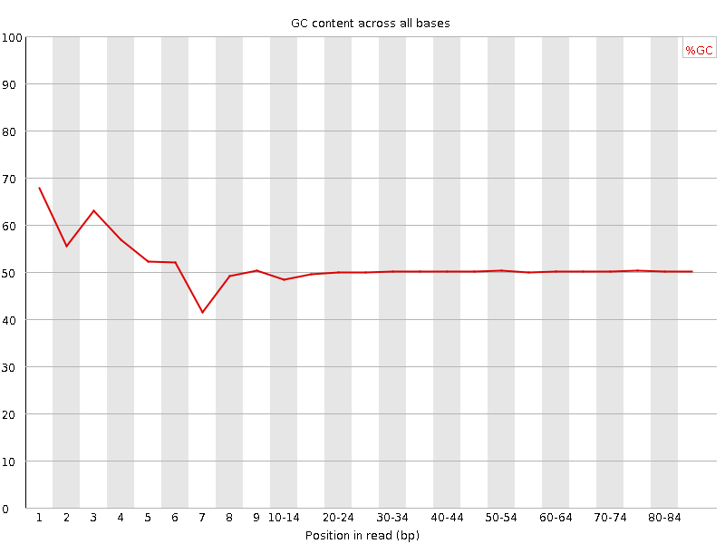
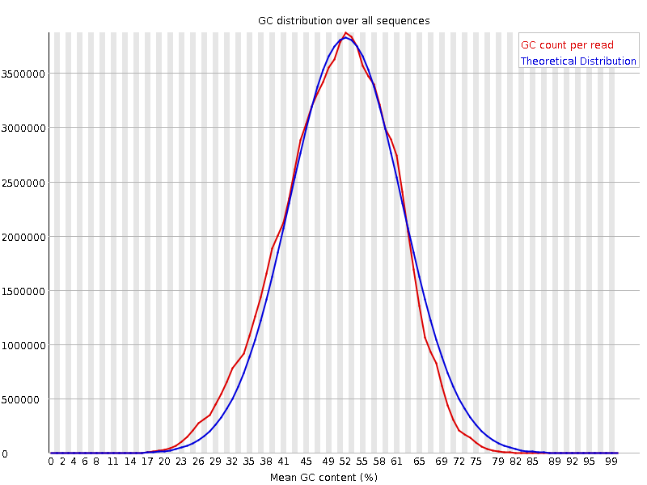
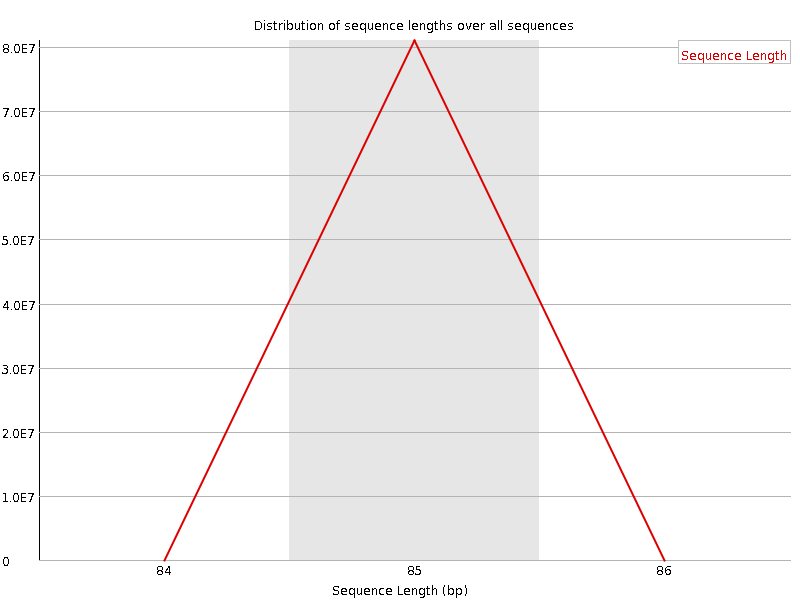
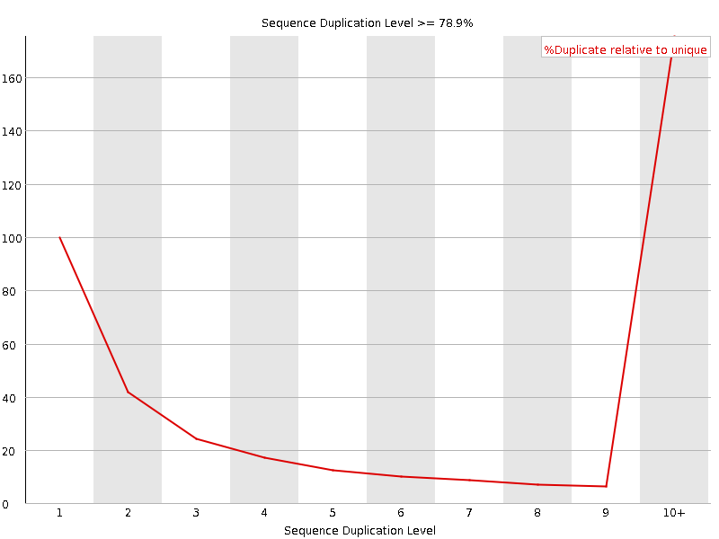
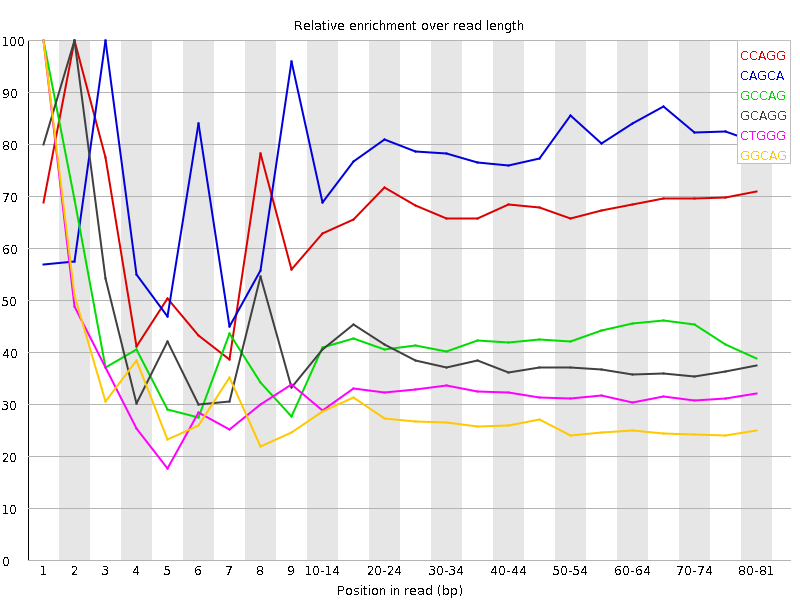

![[OK]](Icons/tick.png) Basic Statistics
Basic Statistics
| Measure | Value |
|---|---|
| Filename | SRR534301_pe_1.f.fastq |
| File type | Conventional base calls |
| Encoding | Illumina 1.5 |
| Total Sequences | 80956355 |
| Filtered Sequences | 0 |
| Sequence length | 85 |
| %GC | 50 |
Per base sequence quality

Per sequence quality scores

![[FAIL]](Icons/error.png) Per base sequence content
Per base sequence content

Per base GC content

Per sequence GC content

Per base N content

Sequence Length Distribution

Sequence Duplication Levels

Overrepresented sequences
No overrepresented sequences
![[WARN]](Icons/warning.png) Kmer Content
Kmer Content

| Sequence | Count | Obs/Exp Overall | Obs/Exp Max | Max Obs/Exp Position |
|---|---|---|---|---|
| CCAGG | 20286325 | 3.1724782 | 4.7247987 | 2 |
| CAGCA | 18074185 | 3.0649934 | 3.91472 | 3 |
| GCCAG | 14867030 | 2.3249812 | 5.4071803 | 1 |
| GCAGG | 15180490 | 2.267423 | 5.7414074 | 2 |
| CTGGG | 15778295 | 2.1999924 | 6.759829 | 1 |
| GGCAG | 14400185 | 2.1508732 | 7.78793 | 1 |
| TTTTT | 14774680 | 2.0658107 | 5.3009577 | 1 |
| GCTGG | 14601805 | 2.0359523 | 5.007232 | 1 |
| TGGGG | 13784930 | 1.8357654 | 6.2613244 | 2 |
| GGGAG | 12217215 | 1.7428921 | 5.1567507 | 1 |
| GGGGA | 11221180 | 1.6007991 | 5.4854426 | 1 |
| GTGGG | 10911100 | 1.453052 | 7.635687 | 1 |
| GGGGT | 10185005 | 1.3563566 | 5.5225286 | 3 |
| GTGGA | 8502140 | 1.2277683 | 5.174036 | 1 |
| CGGGG | 6783265 | 0.9343507 | 6.437496 | 1 |
| GCGGG | 4426225 | 0.6096838 | 5.0939984 | 1 |